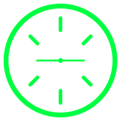

План развития Scan Tire AI
Автоматическая проверка износа шин с помощью компьютерного зрения. Целевой рынок: B2B сегмент (ОАЭ, Турция, Казахстан). Задача: Выйти на $3000+ MRR за 18 месяцев силами одного разработчика.
60%
Точность ИИ
0
Бета-юзеров
$0
MRR (Доход)
Месяц 1
Текущий этап
Стратегия продукта (Только для меня)
Текущий интерфейс: "Зрение Терминатора"
Веб-интерфейс уже демонстрирует рабочий процесс AI-инспекции в стиле "Терминатор / Matrix Vision".
Пользователь загружает фото шины и видит экран анализа с тактическими AR-элементами,
неоново-зелеными акцентами и визуальной обратной связью в реальном времени.
Главное правило: LEAN (Бережливый стартап)
Я работаю один. Не пытаюсь сделать идеальный продукт. Делаю минимально рабочую версию (MVP), выкидываю в сеть, собираю фидбек. Никаких сложных архитектур в начале. Если фича не помогает продавать или не улучшает распознавание износа — она не нужна в первые полгода.
Фокус строго на ИЗНОСЕ (Wear)
Распознавание текста (OCR) откладываем до Фазы 2. Клиенту важнее узнать "пора ли менять шину", чем размер. Одно фото протектора -> Один понятный ответ (Новая/Норм/Износ/Критично).
Локальная разметка данных (PyQt6 + C++)
Вся тяжелая работа с подготовкой датасетов идет ТОЛЬКО на моем компе. Сервер не должен заниматься предобработкой видео или массовой нарезкой.
Инференс через ONNX в Next.js
Дешевый хостинг. Никаких дорогих GPU-серверов на старте. Node.js + onnxruntime на обычном Vercel/VPS потянет первые сотни запросов.
Гибридная модель продаж
Физ. лицам - бесплатно (с рекламой или лимитом). Для автопарков и шиномонтажей (B2B) - API или Pro-аккаунт за подписку. Основные деньги в B2B.
Технологический стек
Внимание: НИКАКОГО OpenCV в Продакшене
Вся предобработка на бэкенде делается через легковесный Sharp.js (нативный для Node.js). C++ движок используется ТОЛЬКО для локальной тулзы разметки.
| Компонент | Технология | Назначение |
|---|---|---|
| Фронтенд | Next.js 15 (App Router) | Интерфейс, загрузка фото, PWA |
| Бэкенд API | Next.js API Routes | Эндпоинт POST /api/analyze |
| ИИ Инференс | ONNX Runtime Node.js | Запуск нейросети на сервере |
| Обработка фото | Sharp.js | Ресайз, нормализация тензоров |
| Обучение | PyTorch + ResNet18 | Дообучение на моем датасете шин |
Месяц 1-2: Создание MVP
В ПРОЦЕССЕЦель: Запустить рабочий сайт scantire.com/beta
Пользователь грузит фото -> получает статус износа. Нужно получить первые 10 живых тестов.
✅ Достигнуто: Рабочий интерфейс "Зрение Терминатора"
Интерфейс уже демонстрирует полный рабочий процесс AI-инспекции с визуальной обратной связью в стиле тактического HUD. Пользователь видит не просто текстовый результат, а полноценный визуальный анализ с цветовой индикацией износа.
Регистрация домена и лендинг
Домен scantire.com, сбор email-ов в лист ожидания.
Экспорт ResNet18 в ONNX
Конвертация обученной модели (PyTorch) в формат .onnx для сервера.
Написание API на Next.js
Интеграция onnxruntime-node и Sharp.js для обработки фото.
Развертывание на Vercel/VPS
Деплой проекта, настройка SSL, загрузка модели в /public/models/.
Пример кода: Экспорт модели в ONNX
python (export.py)
import torch
import torch.nn as nn
from torchvision import models
# Загрузка весов
model = models.resnet18(weights=None)
model.fc = nn.Linear(model.fc.in_features, 5) # 5 классов износа
model.load_state_dict(torch.load('weights/model_wear_best.pth'))
model.eval()
# Экспорт в ONNX
dummy_input = torch.randn(1, 3, 224, 224)
torch.onnx.export(
model, dummy_input, 'wear_resnet18.onnx',
opset_version=17,
input_names=['input'], output_names=['output']
)
Текущий интерфейс: "Зрение Терминатора"
РЕАЛИЗОВАНОВизуальный стиль интерфейса
Интерфейс выполнен в стиле "Терминатор / Matrix Vision" - это не обычный лендинг, а рабочая inspection-панель с тактическим HUD-дизайном.
Современный tech-style лендинг
Темная cyber/matrix эстетика с неоново-зелеными акцентами и ощущением AI-scanner
Многофункциональная зона загрузки
Поддержка drag & drop, выбора файла из галереи и загрузки фото с камеры
AR-режим сканирования
При анализе интерфейс переключается в AR-режим с угловыми маркерами и анимированной неоновой scanline
Визуальный результат анализа
Исходное фото, выделенная область протектора, depth overlay с цветовой индикацией износа
Блок статистики
Класс износа, уверенность, средняя/мин/макс глубина протектора, время обработки
Панель ручной коррекции
UI для ручного выбора класса износа реализован, но серверное сохранение запланировано на следующий этап
Цветовая логика оценки износа
| Класс износа | Глубина | Цвет | Визуальный индикатор |
|---|---|---|---|
| Новая | ≥ 7.0 мм | #22c55e | Зеленый оверлей |
| Хорошая | 5.0-6.9 мм | #84cc16 | Лаймовый оверлей |
| Средняя | 3.0-4.9 мм | #eab308 | Желтый оверлей |
| Изношенная | 1.6-2.9 мм | #f97316 | Оранжевый оверлей |
| Критическая | < 1.6 мм | #ef4444 | Красный оверлей |
Особенности интерфейса "Зрение Терминатора"
// Ключевые визуальные элементы интерфейса - Черный / графитовый фон - Неоново-зеленые акценты (#00ff41) - Технологичные рамки и scan-corners - Анимированная scanline (эффект сканирования) - HUD-стиль (Heads-Up Display) как в тактических системах - Диагностическая консоль с данными в реальном времени - Результат представлен как машинная инспекция, а не обычная форма - Цветовая кодировка износа от зеленого (новая) до красного (критическая)
Стратегия маркетинга и контента (Видео)
Концепция "Build in Public" + Виральный контент
Поскольку бюджета на рекламу нет, главный драйвер — органический трафик через короткие видео (YouTube Shorts, TikTok, Instagram Reels) и тематические форумы.
Идеи для видео (Сценарии Shorts/Reels)
Формат 1: "Шокирующая правда на шиномонтаже"
Снимаешь убитую покрышку (которую клиент считает норм). Наводишь телефон -> ИИ выдает красный алерт "Критический износ, риск ДТП". Текст на экране: "Доверяй ИИ, а не глазомеру".
Формат 2: "ИИ против Механика"
Механик замеряет остаток протектора прибором (показывает 3мм). Следом ты фоткаешь через прилу — ИИ тоже говорит "3мм, износ". Динамичный монтаж.
Формат 3: "Дневник разработчика" (Для LinkedIn)
Видео с экрана компа. "Как я обучил нейросеть понимать износ шин". Показываешь интерфейс программы разметки (которую написал на PyQt6). Отлично работает на западную IT/Авто бизнес-аудиторию.
Каналы сбыта и Аудитория
| Рынок | Где искать | Подход (Холодный метод) |
|---|---|---|
| ОАЭ (Дубай) | Google Maps, LinkedIn | Писать владельцам Luxury Car Rentals и СТО. Предлагать бесплатный API-доступ на месяц для оценки парка машин. |
| Турция | Sahibinden, WhatsApp | Таргетинг на компании по аренде авто и перекупов. Оценка состояния резины б/у авто. |
| СНГ (РФ, КЗ) | Drive2.ru, Пикабу | Статьи: "Написал нейросеть, которая не дает шиномонтажникам вас обмануть". Вызывает много комментов и трафика. |
Шаблон холодного письма (Для ОАЭ)
Текст письма (Английский)
Subject: Free AI tire inspector for [Shop Name] Hi [Name], I found your shop on Google Maps. I built an AI tool that grades tire wear from photos in 5 seconds. No special equipment — just a smartphone camera. Perfect for quick customer reports. Would you test it FREE for 2 weeks? Demo: https://scantire.com/beta Just snap photos of 3-5 tires, tell me if the grades match reality. Best, Slava Kuzkin Scan Tire AI Founder
Юридическая безопасность
ОТКАЗ ОТ ОТВЕТСТВЕННОСТИ (Обязательно!)
Поскольку приложение связано с безопасностью на дороге, в футере сайта и перед первым использованием ОБЯЗАТЕЛЕН дисклеймер. Иначе засудят в случае ДТП.
Текст дисклеймера
ВНИМАНИЕ: Scan Tire AI предоставляет исключительно ПРИБЛИЗИТЕЛЬНУЮ оценку на основе алгоритмов ИИ. Это НЕ заменяет профессиональный осмотр сертифицированным механиком. Используя сервис, вы соглашаетесь, что: 1. Вы несете полную ответственность за принятие решений о безопасности авто. 2. Создатель сервиса не несет ответственности за аварии, травмы или ущерб. 3. Перед выездом всегда проверяйте шины лично или на СТО.